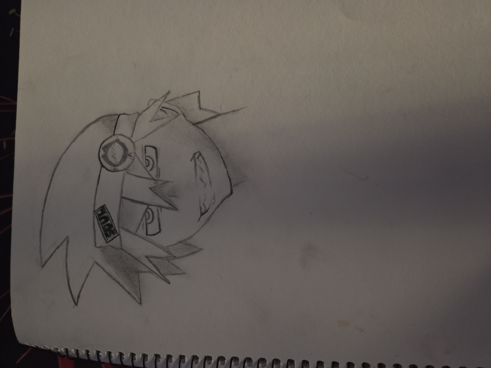
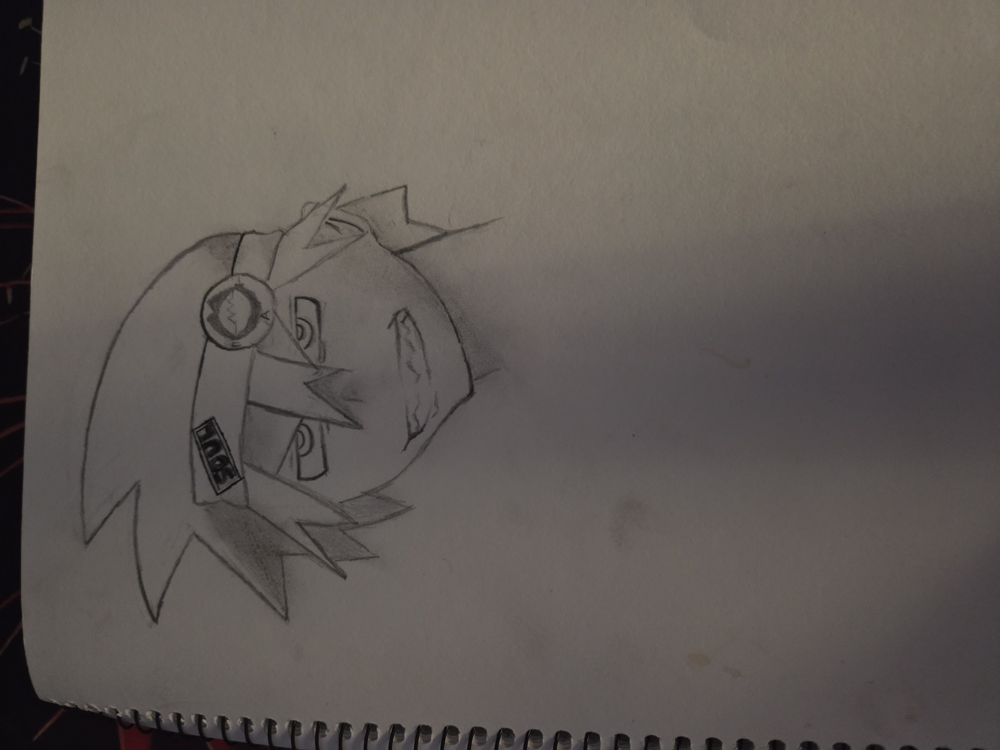

My Hobbies
I have a lot of hobbies and tend to dabble in many different things, including art, reading, card games, video games, watching anime, and working out at the gym. Over the years, I’ve developed a habit of frequently switching interests, but the hobbies I’ve consistently stuck with are watching anime, exercising, and, more recently, playing card games.
Art & Drawing
Beginning of learning of Art
I started drawing in elementary and middle school, creating random sketches. As I improved, I continued drawing into high school and early college, but eventually, I slowed down and almost stopped entirely. Though I still practice occasionally, it’s not as frequent as before. Looking back, I can see how much my skills have developed.


Art Experiment & Learning Techniques
In the beginning, I used basic pencil outlines before switching to pen for cleaner linework. I colored my drawings with standard colored pencils, but I didn’t understand shading or blending. As I progressed, I started incorporating more depth into my art, practicing shading and blending techniques with my favorite anime characters. Eventually, I explored charcoal and a bit of painting. However, I lost motivation and took a break from art until I decided to dabble in it again in college.
 

Photography & Graphic Design
During the time I wasn’t drawing, I got into hiking and photography. I enjoyed capturing landscapes and occasionally took pictures of people during interesting events. I started editing my photos, which led me to experiment with graphic design and crocheting in college, though I haven’t pursued it seriously.

This is some of the digit art that I did during college. I did some picture of peole and I started to make and seel crotchet animals for fun. I had a lot of free in the beginning of college because of covid. So during my free time I started to created and seel crocheting item that people like. This was a way I made a side business this time and sell some of the stuff animal that I wanted to created that I didn't have room to place them.

Anime & Video Games
Anime
Anime has been a huge part of my life for as long as I can remember. The first anime I watched was Fairy Tail, followed by many others. Some of the biggest series I’ve watched include Demon Slayer, Naruto, Bleach, and My Hero Academia.
Video Games
When I was younger, I played a lot of hand-me-down consoles, mainly the PlayStation 2. Some of my favorite games were Jak and Daxter, Spyro, Crash Bandicoot, Ratchet & Clank, and various racing games. Later, I got into Pokémon games like Soul Silver, Black, and Black 2.
Currently, I play on a PC, and one of my main games is Marvel Rivals.
Card Games
Card games have become one of my biggest hobbies. It all started when a friend introduced me to her brother’s card shop. I initially went to play board games but gradually got more involved with the card games played there. Over time, I learned about Magic: The Gathering, Pokémon, Beyblade, and One Piece card games.
About a year ago, I decided to compete in Magic: The Gathering regional qualifiers. I reached third place, but I wasn’t aiming to win since I couldn’t afford to travel across the country for the next level of competition. Still, I enjoyed the experience, especially getting to travel with friends and the community I had built around the game.
My Fitness & Sport
My love for fitness began in high school. I was involved in basketball and was also part of the color guard for five years.
Color Guard
I started color guard at Centennial High School for two years before transferring to Oñate High School for the remaining two years. I continued color guard in my sophomore year of college as well. During this time, I developed skills in dance, balance, and movement. I also helped a friend start a small program to teach elementary school kids color guard, which was a unique and unexpected experience for me.

Basketball & Tennis
I played basketball for two years but eventually quit for various reasons. However, I enjoyed the friendships I made and learned a lot about teamwork and dedication. Later, I picked up tennis, which helped improve my agility and reaction time. Unlike basketball, tennis taught me the importance of self-improvement, as it was more of an individual sport.

Over time, I shifted my focus toward strength training, agility, and maintaining my overall health. Fitness has remained a consistent part of my life, and I continue to challenge myself to improve.